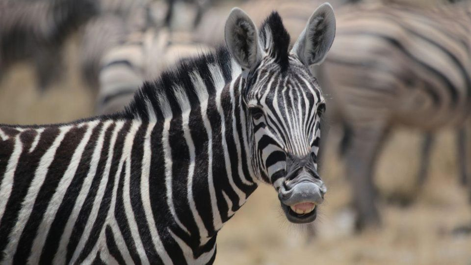

ANISSA
I AM NICE AND LOVE TO CHEER PEOPLE UP NO MATTTER WHAT I LOVE ANIMALS AND ALL THE COOL THINGS ANIMALS
DO AND I LOVE TO BE AROUND THEM THEY ARE JUST SO COOL TO BE WITH
AND RIGHT NOW I AM IN CHEER AND I AM IN TRACK BECAUSE I LOVE TO RUN IT
IS SO MUCH FUN TO JUST RUN AND LET LOSE
I AM A LOVING AND CARING PERSON AND I DO DANCE AND TUMBLING TOO!
WHEN I GET OLDER I WANT TO BE A VET BECAUSE I LIKE ALL ANIMALS, AND NEXT YEAR IS MY TENTH YEAR
OF DANCE. WHEN I AM IN HIGH SCHOOL I WANT TO BE IN CHEER AND BE A FLYER.
ONE OTHER THING I LIKE TO DO IS DRAW AND PAINT.
A
MONDAY - SCRATCH
PRINCESS AND THE FROG
TUESDAY - LEGO MIDSTORM
THE ZEBRA'S
THIS IS OUR RACE CAR THAT WE MADE FROM SCRATH USING LEGOS